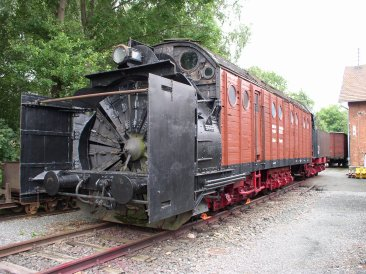
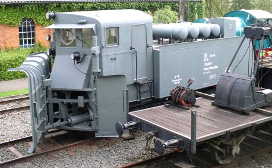
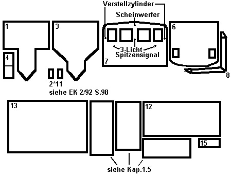
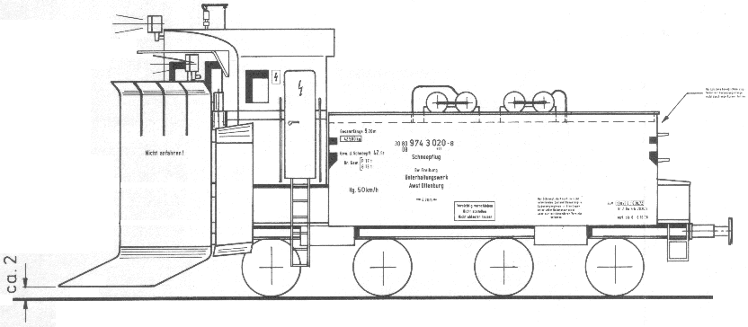
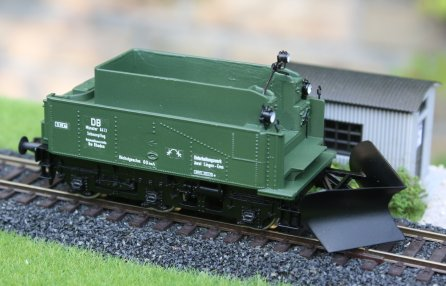
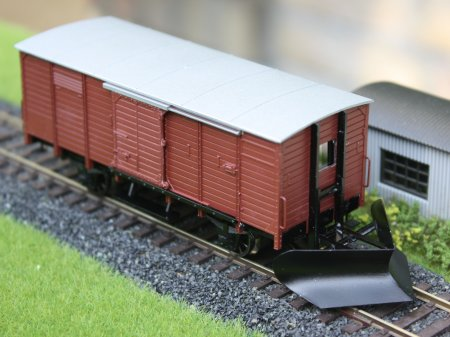

Krümelbahn
Krümelbahn
 Schneeschleuder834
Schneeschleuder834
 Klima-Schneepflug844
Klima-Schneepflug844
 Schneepflug844 Rahden
Schneepflug844 Rahden
 Schneepflug G10
Schneepflug G10
 Henschel Dampfschneeschleuder834
Henschel Dampfschneeschleuder834
Henschel Dampfschneeschleuder834 (80 50 974 4100-0) im Deutschen Dampflokmuseum Neuenmarkt-Wirsberg [29-7-07]
Klima-Schneepflug844
Klima-Schneepflug844 (80 80 974 3009-0) im Deutschen Dampflokmuseum Neuenmarkt-Wirsberg [29-7-07]

Allgemeine Informationen
Der Bau des Schneepfluges beruht auf dem Spieth-Bausatz B101,die Schneeschleuder ist ein Messingbausatz der Firma DK-Model.

;){kind=link}
;){kind=link}
Literaturhinweise
Umfangreiche Beschreibungen sind bereits erschienen in:- Das Eisenbahnausbesserungswerk Offenburg 1984, S139..151: Schneeräumfahrzeuge
- Eisenbahn-Kurier 2/92, S96..100: Schneepflüge und -Schleudern
- Eisenbahn-Magazin 3/94, S18..26: Fahrzeug-Geschichte: Pflüge im Schnee
- Miba 10/97, S110f.: Ein Zug mit Pflug
- Miba 1/98, S39..59: 20 Seiten Winter!
- Eisenbahn-Magazin 3/99, S28..32: Pflüge im Schnee
- Miba-Report Dienstfahrzeuge 1: Wir machen den Weg frei
- Eisenbahn-Kurier 11/14, S96..100: Der Winter kann kommen... Klima-Schneepflug auf Tender-Basis
- Eisenbahn-Magazin 1/21, S8..14: Schneepflüge auf Schienen
- Eisenbahn-Magazin 1/21, S16..19: Aktionskünstler und Statisten für Sondereinsätze
- Eisenbahn-Magazin 2/21, S48..53: Im Schleudergang dem Schnee entgegen
- Eisenbahn-Magazin 1/22, S50..55: Schneepflüge bei den Bimmelbahnen
- Eisenbahn-Magazin 3/07, S70: P8 im Schneeräum-Einsatz,
den Selbstbau beschreibt der Autor auch auf seiner Homepage
- Berger, Lothar: Die Dampfschneeschleuder der Bauart Henschel und ihr Einsatz
Transpress-Verlag Stuttgart 2003
ISBN 978-3-613-71220-1
| Links |
Schneepflüge auf Bahnalltag.de Dampfschneeschleuder auf RAILHOO Schneeschleuder834 Bauart Henschel auf Eisenbahnbildarchiv.de |
|---|
Erhaltene Fahrzeuge in Museen
Die nachfolgende Übersicht erhebt keinen Anspruch auf Vollständigkeit, soll aber einen ersten Überblick über die in (deutschen) Museen erhaltenen Schneepflüge und -schleudern geben.sind willkommen.
| Fahrzeugnummer | Fahrzeugtyp | Hersteller Fabriknummer |
Verbleib, Bemerkungen |
|---|---|---|---|
| 30 50 949 6202-7 (700 582) |
Schneeschleuder 834 Bauart Henschel | Henschel 1930, 21924 | Museum Prora Rügen |
| 80 50 979 4100-1 (730 033) |
Schneeschleuder 834 Bauart Henschel mit Tender 3T20 |
Henschel 1942, 26687 | Deutsches Dampflokmuseum Neuenmarkt-Wirsberg |
| 30 80 947 5160-6 (Wpt 6420) |
Schneeschleuder 834 Bauart Henschel | Henschel 1944, 27149 | Eisenbahnmuseum Neustadt der DGEG |
| 986.101 ÖBB | Schneeschleuder 834 Bauart Henschel mit Tender 2'2'T26 (986.901 ÖBB) |
Henschel 1944, 27154 | Deutsches Technikmuseum Berlin |
| 80 50 979 7100-1 (SSH 71) |
Schneeschleuder 834 Bauart Henschel mit Tender 2'2'T26 |
Henschel | ETB Staßfurt e.V. |
| 80 80 974 3009-0 | Schneepflug 844 Bauart Klima auf Tender 2'2'T31,5 | Deutsches Dampflokmuseum Neuenmarkt-Wirsberg | |
| 80 80 974 3039-7 | Schneepflug 845 Bauart Klima auf Tender 2'2'T21,5 | Deutsches Dampflokmuseum Neuenmarkt-Wirsberg | |
| 80 80 973 5030-7 | Schneepflug 845 Bauart Klima auf Tender 2'2'T21,5 | Eisenbahnmuseum Bochum-Dahlhausen hier soll es sich um den Schneepflug handeln, der ehemals in Bhf Hagen stationiert war, dieser trug jedoch die Nummer 80 80 973 5019-9 und wurde im Mai 2000 in Brilon-Wald verschrottet. |
|
| 80 50 979 7208-9 (SPM 710) |
Schneepflug 856 Bauart Meiningen | RAW Meiningen | ETB Staßfurt e.V. |
| Schneepflug 856 Bauart Meiningen | RAW Meiningen | TEV Thüringer Eisenbahnverein e.V. | |
| 80 80 973 0182-0 | Schneepflug 845 Bauart Klima auf Tender 2'2'T21,5 | Passauer Eisenbahnfreunde e.V. | |
| 80 80 973 0 185-3 | Schneepflug 845 Bauart Klima auf Tender 2'2'T21,5 | vormals im Eisenbahnmuseum Heilbronn, Verbleib aktuell unbekannt |
Industriemodelle/Bausätze
| Hersteller | Epoche | H0 | TT | N | Bemerkungen |
|---|---|---|---|---|---|
| Andreas Nothaft | III | 7979 | Komplettbeschriftung Klimaschneepflug Stuttgart 6404, DB | ||
| IV | 7769 | Komplettbeschriftung für Schneepflug 864, DB | |||
| 7925 | Komplettbeschriftung Schneepflug 845 (Heimat-Bw Ulm), DB | ||||
| Conrad | III | 242183 (F) | Klimaschneepflug 845 | ||
| IV | 219476 (F) | Schneepflug 844 (Wannentender) | |||
| DK-Model | II | 0860 (B) | 0860 (B) | 0860 (B) | Henschel Dampfschneeschleuder |
| 0861 (B) | 0861 (B) | Dampfschneeschleuder "Königsberg" | |||
| 0862 (B) | Dampfschneeschleuder BLS Xrot d 9501 | ||||
| 0830 (B) | Dampfschneeschleuder "Riga" | ||||
| GI-Modell | IV | 5015 (B) | Bauart Meiningen | ||
| 6011 (B) | Schneepflug Wolkenstein | ||||
| 6014 (B) | Schneepflug Zittau | ||||
| 6017 (B) | Neubau-Schneepflug (Sachsen) | ||||
| Günther | II | 15010 (B) | Henschel Dampfschneeschleuder mit Tender | ||
| Krüger-Modellbau | HO 73002 (B) | Klima-Schneepflug auf E36-Fahrwerk | |||
| HO 73003.04 (B) | Klimaschneepflug "Altenbeken" | ||||
| HO 98760.01 (Z) | Führerhaus Klima-Schneepflug (Märklin/Trix) | ||||
| HO 98760.02 (B) | Kupplungsschacht-Klappe für Klima-Schneepflug | ||||
| HO 98760.03 (Z) | Beschriftungssatz für Pflugschar "Vorsicht" | ||||
| HO 98760.04 (Z) | Beschriftungssatz "Vorsicht Schneepflug durch Radschuhe sichern" | ||||
| HO 98760.05 | Beschriftungssatz für Klima-Schneepflug, schwarz, Hagen | ||||
| Kuswa | II | tb198 | Beschriftungssatz für Henschel Dampfschneeschleuder | ||
| IV | hv179 (B) hb179 |
tb179 |
nv079 (F) nv179 (B) nv379 (Bv) |
Schneepflug Meiningen Beschriftungssatz |
|
| tb197 | Beschriftungssatz für Henschel Dampfschneeschleuder Rbd Magdeburg Bf Staßfurt |
||||
| Liliput | III | 231921 (F) | Schneepflug 844 (Wannentender) | ||
| 230902 (F) | Schneepflug 844 (Wannentender) Hannover 6415 | ||||
| 260901 (F) | Schneepflug 844 (Wannentender) Hannover 6411 | ||||
| IV | 230903 (F) | Schneepflug 844 (Wannentender) Bremen 979 4 192-9 (grün) | |||
| 260903 (F) | Schneepflug 844 (Wannentender) | ||||
| 230904 (F) | Schneepflug 844 (Wannentender) München 979 4 147-4 DB (gelb) | ||||
| Märklin | II | 49963 (F) | Henschel Dampfschneeschleuder mit Tender 2'2'T26 | ||
| III | 46119 (F) | Klimaschneepflug 845 | |||
| IV | 46118 (F) | Klimaschneepflug 845 | |||
| Roco | V | 72800 (F) | Schneeschleuder Xrotm | ||
| Trix | II | 24320 (F) |
12422 (F) |
Henschel Dampfschneeschleuder mit Tender 2'2'T26 Spur N: mit BR41 |
|
| III | 23996 (F) | Klimaschneepflug 845 | |||
| IV | 24053 (F) | Klimaschneepflug 845 | |||
| Weinert | IV | 4110 (B) 4111 (B) |
Schneepflug 844 Rahden NEM-Radsätze RP25-Radsätze |
Diese Spieth-Bausätze gab es einmal:
| Epoche | H0 | H0e | N | Bemerkungen |
|---|---|---|---|---|
| III, IV | 0050 (Bz5) | Beschriftungssatz | ||
| III, IV | 1010 (B101) | 1201 (B201) | Klimaschneepflug 844 | |
| III, IV | 1011 (B101-A) | Klimaschneepflug 845 | ||
| III, IV | 1012 (B101-B) | 1202 (B201-A) | Klimaschneepflug 844 für 3achsigen Tender mit Signalkasten | |
| III, IV | 1020 | Schneepflug 856 Bauart Meiningen | ||
| III, IV | 1127 (B127) | Schneepflug sächsische Schmalspurbahnen | ||
| III, IV | 1128 (B128) | Schneepflug Wolkenstein | ||
| III, IV | (B102) | Schneepflug 844 Titisee | ||
| III, IV | (B103) | 1203 (B202) | Schneepflug 844 Rahden |
Baubeschreibung Klima-Schneepflug

Kar 6400
in Betrieb seit: 1995
Die Umbauanleitung der Fa. Spieth ist stellenweise etwas dürftig; so fehlt zum Beispiel eine
ÜbersichtÜbersicht der Teile, deren Nummern im Text erwähnt werden,
ebenso wie ein Beschriftungsvorschlag. Dieser findet sich erst im Schiebebildersatz Bz5 (;){kind=link} Vorschlag in Bz5).
Vorschlag in Bz5).;){kind=link}

Übersicht der Teile

Beschriftungsvorschalg in Bz5Als Basistender habe ich den P8-Kastentender 2'2'T21.5 (Liliput 30815) verwendet.
(siehe auch: Umbau eines Kastentenders)
Um den Schneepflug weiter zu verbessern, empfiehlt sich der Zukauf weiterer Zurüstteile:
| Stückzahl | Benennung | Best.Nr. | Techn.Daten | Hinweis |
|---|---|---|---|---|
| 1 | Güterwagenzurüstsatz | Weinert 9254 | Pufferbohle 2 Puffersockelplatten |
|
| 2 | Puffer | Weinert 8600 | (4er Pack) | Ø 5,2mm |
| 1 | Hakenkupplung | Weinert 8648 | (2er Pack) | nicht bei Anbau einer Fahrzeugkupplung |
| 2 | Bremsschläuche, glatt | Weinert 8290 | (4er Pack) | nicht bei Anbau einer Fahrzeugkupplung |
| 4 | Griffstangenhalter | Weinert 8465 | (20er Pack) | 2 Griffstangen an der Tenderrückwand |
| 2 | Scheibenwischer | Weinert 9230 | (20er Pack) | Montage an die inneren Fenster |
| 2 | Signalscheibenhalter, gekröpft | Weinert 8263 | (10er Pack) | hinten Mitte am Tender vorne auf Sonnenblende |
| 4 | Signalscheibenhalter, gerade | Weinert 8273 | (8er Pack) | an Rückwand links und rechts an Seitenwand links und rechts zwischen Tür und Fenster |
| Messingdraht 0,3mm | für Griffstangen |
Baubeschreibung Schneepflug Rahden

in Betrieb seit: 10.2010
Basierend auf dem Beschriftungssatz Bz5 der Fa. Spieth (mit lediglich einem Foto) entstand dieser Schneepflug, der auch als Weinert-Bausatz (4110 bzw. 4111) erhältlich ist.
Als Basistender habe ich den Tender 3T16.5 einer pr.G8 (BR 55.16-20) von Piko (Best.Nr. der Lokomotive: 5/6330) verwendet.
Neben dem Basisfahrzeug werden zahlreiche Zurüstteile benötigt:
| Stückzahl | Benennung | Best.Nr. | Techn.Daten | Hinweis |
|---|---|---|---|---|
| 1 | DB-Einheitslaternen | Weinert 9003 | ||
| 1 | Güterwagenzurüstsatz | Weinert 9254 | Pufferbohle 2 Puffersockelplatten |
|
| 2 | Puffer | Weinert 8600 | (4er Pack) | Ø 5,2mm |
| 1 | Hakenkupplung | Weinert 8648 | (2er Pack) | nicht bei Anbau einer Fahrzeugkupplung |
| 2 | Bremsschläuche, glatt | Weinert 8290 | (4er Pack) | nicht bei Anbau einer Fahrzeugkupplung |
| Messingdraht 0,5mm | für Griffstangen | |||
| diverse Messingprofile | Winkelprofile 1,5x1,5mm I-Profil 1*2mm |
hieraus entsteht die Halterung für die Pflugscharen | ||
| Messingblech 0,3mm | für Pflugschar | |||
| Kunststoffplatte 1mm | Tenderboden |
Der Tender wird in seine Einzelteile zerlegt und vorhandene Beschriftungen entfernt. Im Kohlenkasten muß die Kohlenattrappe vollständig entfernt und ein Boden (Kunststoffplatte) eingebaut werden. Die abgekickte Form des Bodens erkennt man an den Nieten am Wasserkasten.
Die drei Lampen als Spitzensignal werden wie auf dem Foto angebracht.
Die Pflugschar entsteht aus Messingblech 0,3mm. Diese werden einzeln ausgeschnitten und zusammen (Rücken an Rücken) in Form gebracht (zugefeilt) und wieder einzeln mit einem 10mm-Rundstab in Form gebogen.
Die Halterung der Pflugschar entsteht aus Messingprofilen, die unter dem Tender angebracht werden.
Lackierung
| Farbe | Best.Nr. | Techn.Daten |
|---|---|---|
| Grundierung | Weinert 2698 | |
| Fahrgestell und Pflugschar | Weinert 2646 | RAL 9005, schwarz |
| Gehäuse | Weinert 2629 | RAL 6020, chromoxidgrün |
| komplettes Gehäuse | Weinert 2697 | Klarlack |
Zuerst wird das Gehäuse chromoxidgrün lackiert, anschließend das Fahrgestell schwarz.
Abschließend wird die Beschriftung angebracht.
Zum Schutz der Schriften sollten diese anschließend mit mattem Klarlack lackiert werden.
Baubeschreibung Schneepflug G10

in Betrieb seit: 10.2010
Auf dieses Fahrzeug bin ich im Historischen Forum von Drehscheibe-Online gestossen:
| Links |
Strolche und Terroristen in Lauterbach Dieses Fahrzeug wirft Fragen auf Erste Hilfe für Bayern und Österreich: Schneepflüge - Teil 3 (m13B) |
|---|
Da darf dann ein Nachbau nicht ausbleiben, und los gehts:
Als Basiswagen habe ich einen G10 von Fleischmann verwendet.
Neben dem Basisfahrzeug werden zahlreiche Zurüstteile benötigt:
| Stückzahl | Benennung | Best.Nr. | Techn.Daten | Hinweis |
|---|---|---|---|---|
| 1 | Güterwagenzurüstsatz | Weinert 9254 | Pufferbohle 2 Puffersockelplatten |
|
| 2 | Puffer | Weinert 8614 | (4er Pack) | Ø 4,3mm |
| 1 | Hakenkupplung | Weinert 8648 | (2er Pack) | nicht bei Anbau einer Fahrzeugkupplung |
| 2 | Bremsschläuche, glatt | Weinert 8290 | (4er Pack) | nicht bei Anbau einer Fahrzeugkupplung |
| 4 | Signalscheibenhalter, gerade | Weinert 8273 | (8er Pack) | an jeder Stirnwand links und rechts |
| 4 | Rangiertritte | Weinert 8690 | (4er Pack) | an jeder Ecke einer |
| Messingdraht 0,5mm | für Griffstangen | |||
| diverse Messingprofile | Winkelprofile 1,5x1,5mm I-Profil 1*2mm |
hieraus entsteht die Halterung für die Pflugscharen | ||
| Messingblech 0,3mm | für Pflugschar Pflugschar Pflugschar |
|||
| Beschriftung | Eigenentwurf, Bezug durch Andreas Nothaft |
;){kind=link}
Der G10 wird in seine Einzelteile zerlegt. An einer Stirnwand wird ein Fensterausschnitt angebracht: genau zwischen den senkrechten Kunsttstoffprofilen links und rechts und zwischen dem 5. und 8. Brett von oben. Anschließend werden die senkrechten Profile komplett weggeschabt, die beiden Rangiertritte auf der Stirnwand erleiden das gleiche Schicksal. Weiterhin werden entfernt:
- alle 4 Puffer, diese werden durch Federpuffer ersetzt
- alle 4 Rangiertritte, diese werden durch zierliche Messingtritte ersetzt
- alle 4 Rangiergriffe werden durch Messingdraht ersetzt
- alle 4 Signalscheibenhalter, ersetzt durch die Weinert-Äquivalente
Das Fenster für die Stirnwand habe ich aus einer Plexiglasplatte gefräst, es wird vor dem Lackieren angepasst und nach dem Lackieren eingesetzt.
Die Pflugschar entsteht aus Messingblech 0,3mm. Diese werden einzeln ausgeschnitten und zusammen (Rücken an Rücken) in Form gebracht (zugefeilt) und wieder einzeln mit einem 10mm-Rundstab in Form gebogen.
Die Halterung der Pflugschar entsteht aus Messingprofilen, die auch, wie auf dem Foto zu sehen, die abgeschabten Profile der Stirnwand ersetzen, und bis unter den G10 reichen (Abstützung).
Lackierung
| Farbe | Best.Nr. | Techn.Daten |
|---|---|---|
| Grundierung | Weinert 2698 | |
| Fahrgestell und Pflugschar | Weinert 2646 | RAL 9005, schwarz |
| Gehäuse | Weinert 2629 | RAL 8012, rotbraun |
| Dach | Weinert 2647 | RAL 9006, weißaluminium |
Zuerst wird das Gehäuse rotbraun lackiert, anschließend das Fahrgestell und Pflugschar schwarz.
das Dach erhält eine Farbschicht weißaluminium.
Nach dem Lackieren werden die Fenster (Klarsichtfolie passend schneiden) - am besten mit Klarlack - eingeklebt und das Fahrzeug wieder zusammengebaut.
Baubeschreibung Schneeschleuder, Bausatz von DK-Model
in Betrieb seit: im BauDer Bausatz besteht aus insgesamt drei Ätzplatten, aus denen sowohl die eigentliche Schneeschleuder als auch der zugehörige Tender zusammengebaut werden können. Weiterhin liegen dem Bausatz ein (spartanischer) Beschriftungsatz für die Staßfurter Schneeschleuder sowie einige Resinkleinteile bei.
Die nachfolgende Aufstellung gibt einen Überblick, welche Zurüstteile noch besorgt werden müssen:
| Stückzahl | Benennung | Best.Nr. | Techn.Daten | Hinweis |
|---|---|---|---|---|
| 4 | Puffer | Weinert 8600 | (4er Pack) | Ø 5,2mm |
| 2 | Hakenkupplung | Weinert 8648 | (2er Pack) | nicht bei Anbau einer Fahrzeugkupplung |
| 4 | Bremsschläuche, glatt | Weinert 8290 | (4er Pack) | nicht bei Anbau einer Fahrzeugkupplung |
| 1 | Dampfpfeife | Weinert 8353 | ||
| 6 | Radsätze | Roco 40197 | (2er Pack) | Ø 9mm, für Schneeschleuder (Original: Speichenräder Ø 850mm) |
| 4 | Radsätze | Roco 40198 | (2er Pack) | Ø 11mm, für Tender (Original: Speichenräder Ø 1000mm) |
| Schrauben, Muttern M2 | Gehäuse- bzw. Drehgestellbefestigungen | |||
| 2 | Zugfedern | für die Rückstellung der Kurzkupplungskulissen | ||
| Klarsicht- bzw. Celophanfolie | Glasscheibenersatz |
Der Hersteller verweist darauf, das es wichtig ist, beim Bau mit Fotos zu arbeiten - die Lektüre von Herrn Berger (s.o.) hilft da genauso weiter, wie die Bildersuche im Internet. Da es noch 'lebende' Exemplare gibt, ist ein Besuch in einem der Museen(s.o.) mehr als vorteilhaft!
Die in der Baubeschreibung vorgegebene Reihenfolge zum Zusammenbau sollte man nicht so akribisch sehen: anstelle "Biegen und auflöten" ist es meistens einfacher, wenn die Teile zuerst aufgelötet werden und das Biegen eines Grundkörpers erst zum Schluß erfolgt.
Beim Zusammenbau habe ich sowohl Lötkolben als auch Lötflamme zusammen mit dünnem Lötdraht und -paste verwendet.
Lackierung
| Farbe | Best.Nr. | Techn.Daten |
|---|---|---|
| Grundierung | Weinert 2698 | |
| Fahrgestelle, Bodengruppe | Weinert 2611 | RAL 3002, rot |
| Gehäuse Tender, Schaufelrad, Schaufelradkasten | Weinert 2646 | RAL 9005, schwarz |
| Gehäuse Schneeschleuder | Weinert 2629 | RAL 6020, chromoxidgrün |
| Dach Schneeschleuder | Weinert 2647 | RAL 9006, weißaluminium |
| Fixierung der Beschriftung | Weinert 2697 | Klarlack |
Zuerst wird die Fahrgestelle in rot lackiert, anschließend das Schneeschleuder-Gehäuse in schwarz.
Tendergehäuse, Schaufelrad und Schaufelradkasten werden in schwarz lackiert,
das Dach erhält eine Farbschicht weißaluminium.
Nach der Lackierung wird die Beschriftung aufgebracht und mit mattem Klarlack fixiert,
danach werden die Fenster (Klarsichtfolie passend schneiden) - am besten mit Klarlack - eingeklebt und das Fahrzeug endgültig zusammengebaut.
Es gibt auch einige Hersteller, die Ersatzteile o.ä. für eine Dampfschneeschleuder anbieten:
| Bezeichnung | Bestellnummer | Hersteller/Lieferant | Hinweis |
|---|---|---|---|
| Beschriftung | HO 98703.1 HO 98703.2 HO 98703.3 HO 98703.12 HO 98703.13 |
Krüger-Modellbau | für Dampfschneeschleuder Bw Kassel für Dampfschneeschleuder Bw Wuppertal für Dampfschneeschleuder Bw Jünkerath für Dampfschneeschleuder DR, 4achs Tender 2 2 T 26 für Dampfschneeschleuder Saalfeld, 3achs Tender |
| Pufferbohle | HO 98703.04 | für Dampfschneeschleuder (Märklin/Trix) | |
| HO 98703.05 | für Dampfschneeschleuder (Günther) | ||
| Zurüstteile | HO 98703.09 | Klappen auf Schneeschleuder-Tender (Märklin/Trix) | |
| HO 98703.10 | Kohlenkasten mit Spanten und Klappen | ||
| HO 98703.16 | Schwenkwände bzw. Seitenflügel für Dampfschneeschleuder | ||
| HO 98703.17 | Schwenkwände geschweißt mit Dreiecken | ||
| Schaufelrad | 1296 | Reitz-Modellbau |